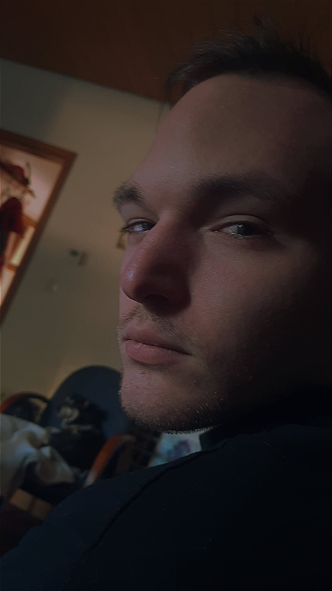

(Bild vom Entwickler Lukas Owner/Entwickler vom Luna Projekt)
1. Verantwortlicher Entwickler
Der WhatsApp‑Bot Luna wird von einem einzelnen Entwickler betrieben. Dieser ist verantwortlich für:
- den technischen Betrieb des Bots
- die Speicherung und Löschung von Daten
- die Sicherheit der Server
- Updates und Fehlerbehebungen
- die Einhaltung der Datenschutzrichtlinien
2. Kontakt & offizieller Kanal
Für Datenschutzanfragen, Probleme oder vollständige Löschanfragen:
3. Technische Hinweise
Luna verarbeitet ausschließlich Daten, die für den Betrieb notwendig sind. Dazu gehören:
- Telefonnummern bei Registrierung
- Token‑Daten für die Funktionsfähigkeit
- Gruppen‑IDs und Systemnachrichten
Bei unregister wird die Telefonnummer gelöscht.
Tokens können technisch bestehen bleiben.
4. Hinweise zum sicheren Betrieb
- Luna nicht privat anschreiben
- Luna nicht anrufen
- Luna nicht zum Spammen verwenden
- keine schädlichen Befehle senden
- keine Versuche, Luna zu überlasten oder zu manipulieren